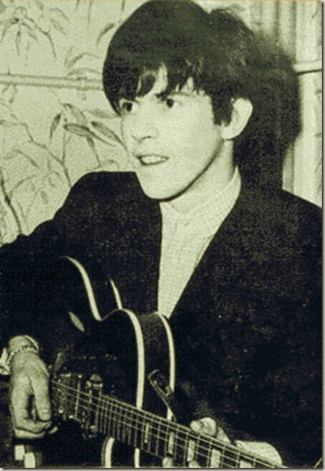
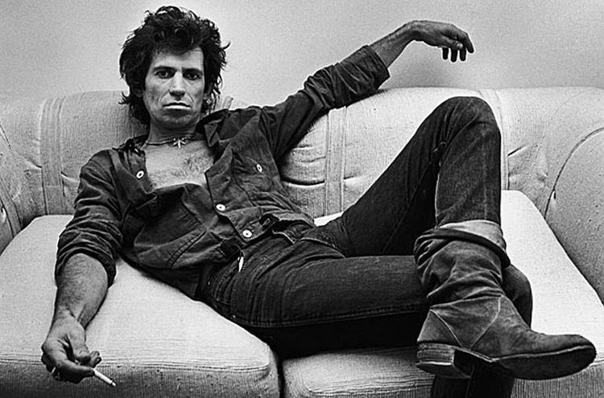

Кит Ричардс (англ. Keith Richards; род. 18 декабря 1943, Дартфорд) — британский гитарист и автор песен, вместе с Миком Джаггером составляющий неизменный костяк рок-группы The Rolling Stones.
Кит Ричардс (англ. Keith Richards; род. 18 декабря 1943, Дартфорд) — британский гитарист и автор песен, вместе с Миком Джаггером составляющий неизменный костяк рок-группы The Rolling Stones.
Кит Ричардс, единственный ребёнок в семье, родился в Дартфорде, графство Кент, 18 декабря 1943 года. Его отец, фабричный чернорабочий, был ранен во время Второй мировой войны. Его дед по материнской линии, участвовавший в турах по Великобритании в составе джазового биг-бенда Gus Dupree and his Boys, оказал раннее влияние на музыкальные вкусы Кита и заинтересовал его игрой на гитаре. Мать Ричардса познакомила его с музыкой Билли Холидей, Луи Армстронга и Дюка Эллингтона, и купила ему первую гитару — акустическую «Розетти» — за семь фунтов. Однако, его отцу не очень нравилось подобное увлечение. Первым гитарным кумиром Ричардса был Скотти Мур.
Ричардс в 1972 году. Ричардс ходил в ту же начальную школу, что и Мик Джаггер. Эти двое знали друг друга ещё со школы и жили в одном районе, пока в 1954 семейство Ричардсов не переехало в другой район Дартфорда. С 1955 до 1959 Ричардс посещал Дартфордскую техническую школу, где руководитель хора Джек Клейр, заметил его певчий голос и принял его в школьный хор. В 1959, Ричардса исключили из Дартфордской технической школы за прогулы, и директор школы предложил ему поступить в художественный колледж в соседнем городе Сидкап. В художественном колледже Ричардс посвятил всё своё время игре на гитаре. Он продал очень большое количество музыкальных пластинок, чтобы купить свою первую электрогитару — полуакустическую гитару Hoffner.
17 октября 1961, во время поездки из Дартфорда в Сидкап, Ричардс зашёл в тот же самый вагон что и Мик Джаггер, который был тогда студентом Лондонской школы экономики. Они узнали друг друга и стали обсуждать блюзовые и ритм-энд-блюзовые пластинки, которые Мик заказал по почте из Америки. Ричардс был удивлён и впечатлён тем, что Джаггер не только разделял его увлечение Чаком Берри и Мадди Уотерсом, но также, что у них были одни и те же LPs (долгоиграющие пластинки), которые были чрезвычайно редки в Великобритании в то время. К тому же, эти двое обнаружили, что у них есть общий друг: Дик Тэйлор — приятель Ричардса — пел с Джаггером в любительской группе Little Boy Blue and the Blue Boys. Мик предложил Киту прийти на репетицию, и вскоре Ричардс присоединился к группе.
Группа распалась после того, как Джаггер и Ричардс встретили Брайана Джонса, с которым они в результате организовали группу The Rolling Stones. К середине 1962 Ричардс ушёл из колледжа искусств ради музыкальной карьеры, и переехал в квартиру в Лондоне с Джаггером и Джонсом. В это время его родители развелись. Ричардс поддерживал хорошие отношения с матерью, которая была очень благосклонна к его музыкальной деятельности, но перестал общаться с отцом, и возобновил контакт с ним в 1982. С 1963 по 1978, Ричардс использовал сценическое имя «Кит Ричард», так как менеджер Rolling Stones считал это имя более подходящим для шоу-бизнеса.
В юности кумиром Ричардса был Чак Берри. Little Boy Blue and the Blue Boys играли на репетициях многие музыкальные произведения Берри. Rolling Stones на ранних этапах во время концертов часто исполняли кавер-версии композиций Берри и Бо Диддли. Творчество Джимми Рида и Мадди Уотерса — другой ранний источник вдохновения, и основа для стиля, сочетающего игру лид и ритм-гитары, который Ричардс и Брайан Джонс развивали со времени основания Rolling Stones.
После замены Джонса гитаристом Миком Тэйлором, который работал с Rolling Stones с 1969 по 1974, стиль игры Тэйлора привёл к более явному разделению между ролями лид-гитары и ритм-гитары. В 1975 с заменой Тэйлора Ронни Вудом, группа возвращается к стилю сочетания гитарных партий. Ричардс сказал, что годы игры с Вудом были наилучшим музыкальным периодом Rolling Stones. Ричардса, у которого имеется более тысячи гитар, на некоторых из которых он ни разу не играл, часто ассоциируют с гитарой Fender Telecaster. Особенно с двумя 1950-го года выпуска Телекастерами, снабженными хамбакером фирмы Gibson.
Ричардс считает, что акустическая гитара является основой всей его игры, однажды он сказал: «Каждый гитарист должен играть на акустической гитаре дома. Неважно, что вы играете, если вы не поддерживаете на высоком уровне вашу акустическую игру, вы никогда не сможете использовать весь потенциал электрогитары, потому что вы теряете контакт». Акустическая гитара Ричардса прослеживается на протяжении всей карьеры Rolling Stones, включая такие хиты как «Not Fade Away», «Brown Sugar», «Beast of Burden» и «Almost Hear You Sigh»